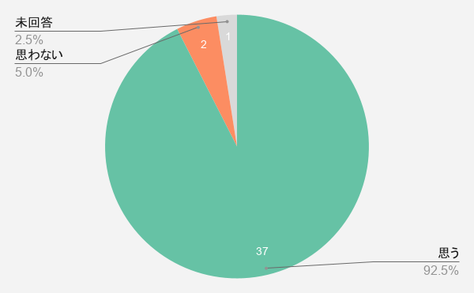
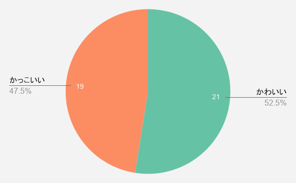
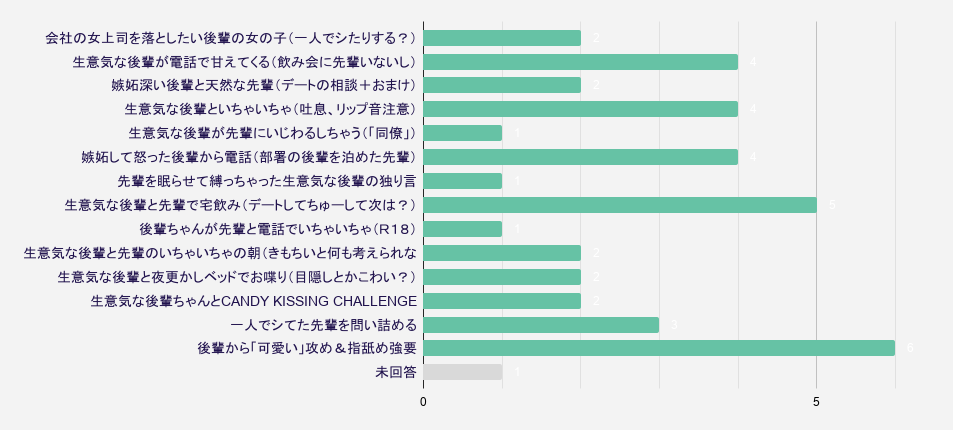
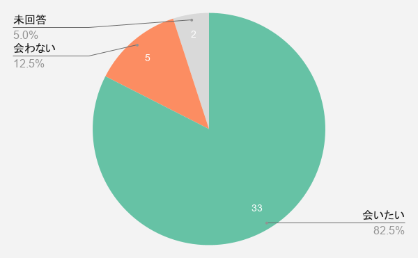
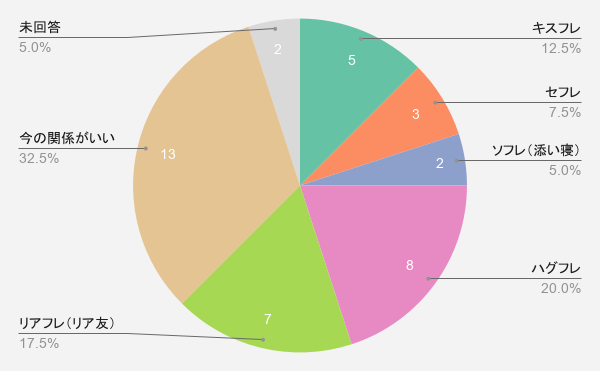
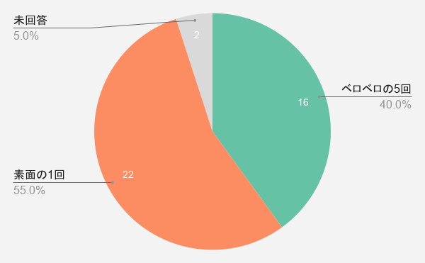
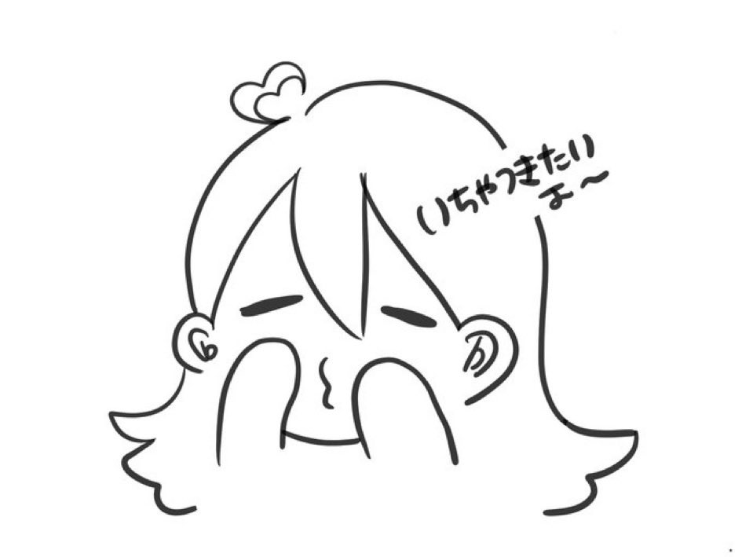

アンケート
回答者40人（未回答を含む）
Q1.れいさんは “いい人” だと思う？（いろんな意味で）

Q2. れいさんは かわいい？ かっこいい？

Q3.「生意気な後輩シリーズ」で特に好きなのは？

画像は左右にスワイプしてご覧ください。
⇩こちら🧸はれいさんへの親密さや下ネタを含みます。
そういった内容が苦手な方は開かずスルーしてください。
Q4. れいさんに会いたい？

Q5. れいさんとどんなお友達になりたい？

Q6.流れでするなら？

Q7.れいさんをオススメするならなんて紹介する？

オススメしたくない 絶対に好きになっちゃうから
とにかく声がいい＋人柄も良くて歌も上手くて沼る
いったん世田れいしてみて 絶対好きになるから
沼
吸い込まれていくように好きになってしまう
声が良い
可愛いとかっこいいを持ち合わせるずるい人
至高のS
ボイスが自然で実際に話してる気分になる
中毒性あり
オススメしたくない（隠しておきたい）
沼らせ上手
人間力が高く優しくて可愛いエロの天才
かわいい人
一度聞いたら忘れられない声の持ち主
perfect
可愛くてかっこよくてギャップが最高
沼らしてくる人
私が初めて思ったかっこいい人です！
甘えさせてくれる
歌が上手くてとてもいい声の持ち主
ふわふわ癒し属性
遠隔なのにその気にさせる天才
oh……numa…
誰の話でもちゃんと聞いてくれる
気づいたら沼ってる
天性の魅力と知性を兼ね備えた人
声で人を惚れさせる人
好きになってよかったと想える人
したたかなる末っ子根性
可愛くてカッコよくて歌が上手い
価値観を変える人たらし
二度と抜けられない沼お姉さん
癒しと元気を与えてくれる
沼らせ上手でいつも翻弄される
天使なのかなっていう疑惑
きっと好きになるよ。キミには素質があるからね。
不思議な程その時に一番欲しい言葉をくれる
甘えたいけど甘えられない人にこそ
弄ばれたくなる
なんやかんや真面目
魅力の底がない
言語化能力が高い
笑い声も笑い方もかわいい
英語も関西弁も標準語もいい
すべて見透かされてる
好きすぎ注意
普通に勘違いする
距離のとり方・詰め方が絶妙
期待させるのがうまい
心の緊縛師とさせていただく
嫉妬心を芽生えさせられる
100点満点の飴と鞭
依存の意味を知ることになる
知らない方が平穏に生きられるかもしれない
れいさんのファンの方に聞いてみたかったことをアンケートにしました。よかったら、気軽に答えてもらえるとうれしいです。
※フォーム公開期間は、サイト公開から1週間を予定しています。
※フォームの公開は日本時間の7/4 24:00までとさせていただきます。
▶ アンケートフォームはこちら（ログイン不要です）
※募集は終了しました。
※今回のアンケートは、40名の方にご回答いただきました。ご協力ありがとうございました！